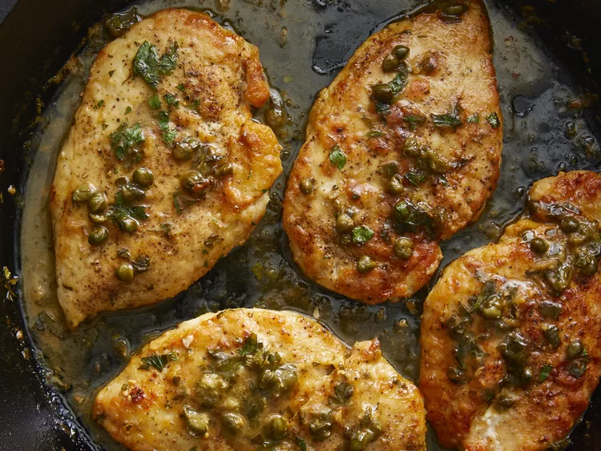

Chicken Piccata

Description:
Chicken piccata is super quick and easy to make with pounded
chicken breasts and a simple pan sauce made with capers,
butter, white wine, and lemon juice.
Ingredients
- 4 skinless, boneless chicken breast halves
- cayenne pepper to taste
- salt and ground black pepper to taste
- all-purpose flour for dredging
- 2 tablespoons olive oil
- 1 tablespoon capers, drained
- 1/2 cup white wine
- 1/4 cup fresh lemon juice
- 1/4 cup water
- 3 tablespoons cold unsalted butter, cut in 1/4-inch slices
- 2 tablespoons chopped fresh Italian parsley
Steps
- Step 1: Place chicken breasts between 2 sheets of
heavy plastic on a solid, level surface. Firmly pound chicken
breasts with the smooth side of a meat mallet to a 1/2-inch thickness.
- Step 2: Season both sides of chicken breasts with cayenne, salt, and black pepper;
dredge lightly in flour and shake off any excess.
- Step 3: Heat olive oil in a skillet over medium-high heat.
Place chicken in the pan, reduce heat to medium, and cook until browned and cooked through,
about 5 minutes per side; transfer to a plate.
- Step 4: Cook capers in reserved oil, smashing them lightly to release brine, until warmed through, about 30 seconds.
Pour white wine into the skillet and bring to a boil while scraping the browned bits of food off the bottom of the pan with a wooden spoon.
Cook until reduced by half, about 2 minutes.
- Step 5: Stir lemon juice, water, and butter into the reduced wine mixture; cook and stir continuously to form a thick sauce, about 2 minutes.
Reduce heat to low and stir parsley through the sauce.
- Step 6: Return chicken breasts to the pan and cook until heated through, 1 to 2 minutes. Serve with sauce spooned over the top.